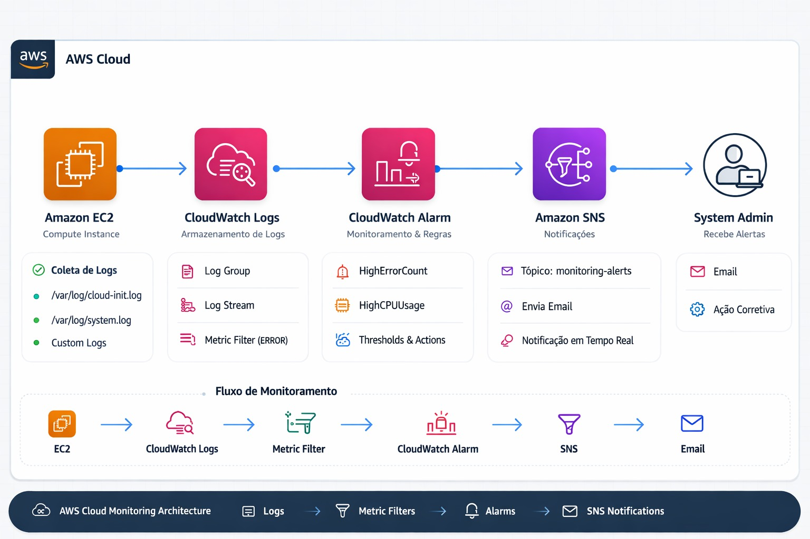

Monitoramento e Logs no Amazon EC2
Laboratório prático utilizando Amazon EC2, CloudWatch, Metric Filters e SNS
Arquitetura de Monitoramento AWS

 Passo a passo da atividade
Passo a passo da atividade
- Atualizar a instância EC2
- Instalar o CloudWatch Agent
- Configurar coleta de logs
- Criar Log Group no CloudWatch
- Criar Metric Filter para detectar ERROR
- Criar Alarme HighErrorCount
- Criar tópico SNS
- Gerar logs de erro
- Criar alarme de CPU HighCPUUsage
- Gerar stress de CPU
 Objetivo do laboratório
Objetivo do laboratório
Implementar um sistema completo de monitoramento de logs e métricas utilizando serviços AWS.
-
 Logs enviados para CloudWatch
Logs enviados para CloudWatch
-
Metric Filter detecta ERROR
-
Alarmes configurados
-
Notificação via SNS
-
Monitoramento de CPU